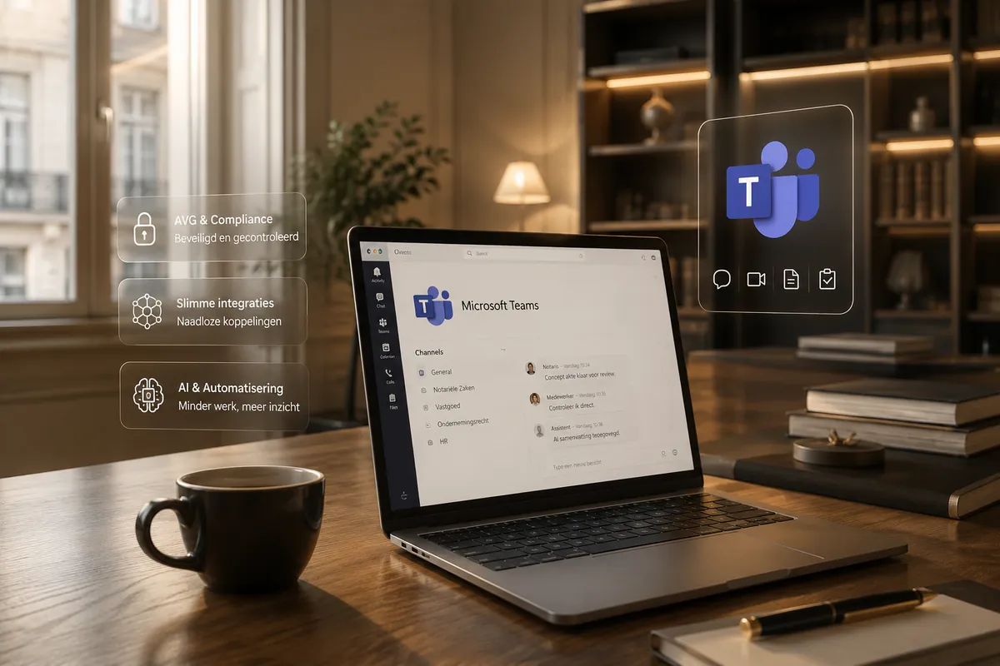

Wat wij doen
Alles wat uw kantoor nodig heeft.
Zes kerndiensten, één partner. Los af te nemen of als totaalpakket — altijd volledig beheerd.
Microsoft 365
De moderne, veilige werkplek met Teams, SharePoint en OneDrive — ingericht en volledig beheerd.
Meer →AI-oplossingen
Microsoft 365 Copilot, transcriptie en samenvattingen van overleggen — veilig binnen uw eigen omgeving.
Meer →Automatiseren
Dossiers aanmaken, stukken opvragen, in- en uitdienst: kantoorwerk dat vanzelf gaat.
Meer →Managed Firewall
FortiGate-firewalls van Fortinet, continu bewaakt, geüpdatet en beheerd door onze specialisten.
Meer →Xelion-telefonie
Cloudtelefonie van Xelion en zakelijke mobiele telefonie — altijd professioneel bereikbaar.
Meer →Zakelijke verbindingen
Zakelijk glasvezel, internet en een snel, veilig LAN- en wifi-netwerk — volledig beheerd.
Meer →Voor wie
Specialist in kantoren waar vertrouwen alles is.
Advocaten, accountants en notarissen werken met de meest vertrouwelijke gegevens van hun cliënten. Wij kennen de eisen van uw vak en richten uw IT daar volledig op in.
Advocatenkantoren
Vertrouwelijke dossiers, het beroepsgeheim en veel mobiel werk. Wij zorgen voor een veilige, moderne IT-omgeving die daar volledig op is ingericht.
Accountantskantoren
Grote hoeveelheden financiële klantdata, piekperiodes en veel koppelingen. Wij maken uw IT veilig, stabiel en slim geautomatiseerd.
Notariskantoren
Het notariaat kennen we door en door. Met Nobilex en Donna James bieden wij het notariaat een complete, toekomstgerichte oplossing.
Onze aanpak
Strategie. Architectuur. Support.
Alles onder één dak.
Wij zorgen voor een veilige, stabiele en moderne IT-omgeving, zodat u zich kunt richten op wat écht belangrijk is.
Strategie
We denken mee over uw doelen en vertalen deze naar een toekomstgerichte IT-strategie.
Architectuur
Slimme en schaalbare IT-architectuur op basis van Microsoft 365 en best practices.
Security & Compliance
Uw data en processen zijn optimaal beschermd en voldoen aan wet- en regelgeving.
Support
Persoonlijke support door specialisten die uw kantoor en uitdagingen écht begrijpen.

Microsoft 365 & TeamsWaarom Legal IT
Wij combineren technologie met kennis van uw vak.
Een advocaten-, accountants- of notariskantoor stelt andere eisen aan IT dan een gemiddeld bedrijf. Vertrouwelijkheid, continuïteit en compliance zijn geen extra's — ze zijn de basis. Daar is onze hele aanpak op gebouwd.
- Eén vast aanspreekpunt — geen ticketnummers, maar mensen die uw kantoor kennen.
- Proactief beheer — wij signaleren en lossen op, vaak vóór u iets merkt.
- Transparante vaste prijs — voorspelbare kosten per maand, zonder verrassingen.
Informatiebeveiliging
Wij werken volgens ISO 27001. Aantoonbaar.
De internationale norm voor informatiebeveiliging — certificering verwacht in Q1 2027. Al onze medewerkers hebben een VOG en geheimhoudingsverklaring, en elke klant krijgt standaard een verwerkersovereenkomst.
Officieel partner van
Voor het notariaat werken we samen met Nobilex en Donna James: notariële software en veilige AI, naadloos geïntegreerd met uw IT-omgeving.
Vertrouwd door advocaten, accountants en notarissen
Klaar voor IT die meegroeit met uw ambities?
Plan een vrijblijvend gesprek met één van onze specialisten.